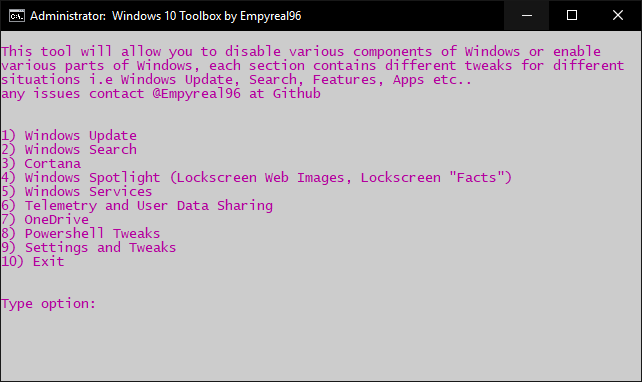
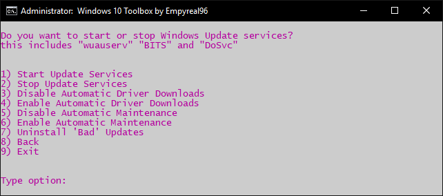
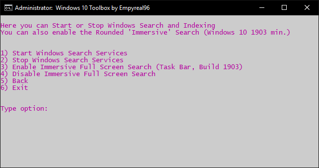
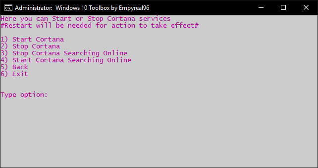
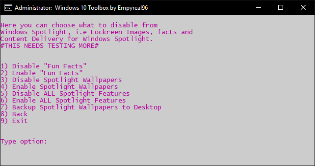
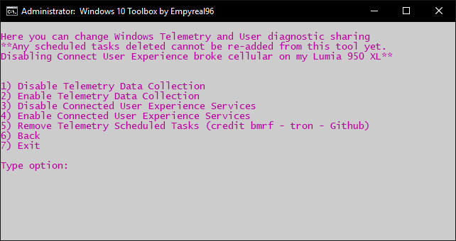
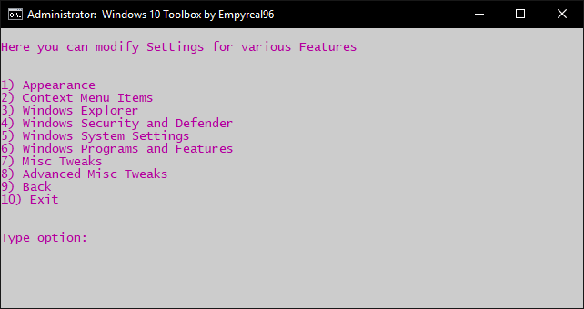

Enable/Disable Update Services, Defender, Spotlight, Optional Features (DirectPlay, WSL), Built-in Metro Apps.....
Enable/Disable Telemetry Services and Related Services, Advertising IDs and Application Information Sharing.
Delete Scheduled telemetry tasks.
Preset Paging File Sizes, Reset Shell Folders and DPI, Administrator Account, Context Menu Items, Appearance Settings....
Find the FULL changelog here: (Will write full changelog soon)